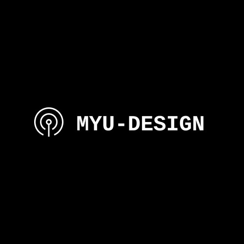

Miyagi University
宮城大学のデザイン研究棟のPRサイトのデザイン
カテゴリー：Webデザイン
スタッフ：自分のみ
制作期間：2週間
使用言語・ツール：Figma,Photoshop,Illustrator
Figma閲覧用URL：https://www.figma.com/file/1lgnlGbvYgwDlJK63u1QMS/myu-design_2?node-id=0%3A1
掲載情報の優先度確認
- ①デザインの新たな拠点が誕生したことを強くアピールする
- ②デザイナーや企業、研究者や学生などの仲間を集める
- ③活動状況を定期的かつ継続的に更新する
- ④学生主体のイベントや演習成果の発信
以上の情報の優先順位の要望をもとにサイト設計を行っていきます。
ロゴマーク
右の画像が今回作成したロゴマークです。現在のサイトの背景が白なので便宜的に黒背景に白でマークを入れています。
デザインの新たな発信拠点であることのアピールという優先順位が一番高い情報を盛り込んだロゴとなっています。発信するというメッセージを伝播を模したマークで表現し、横に宮城大学を表すMYUとデザイン研究棟を表すDESIGNの文字を表示したロゴでメッセージを伝えることを目指しました。
